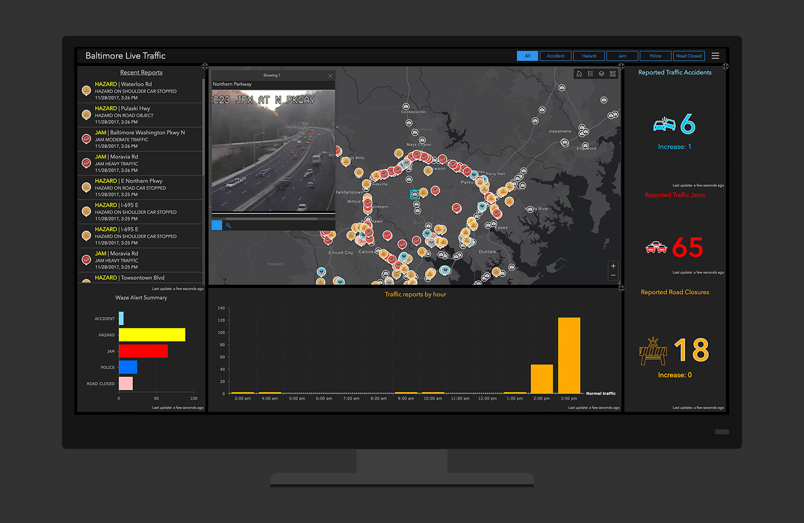

Note: this page is only a draft, but this project is hosted on a public repository where anyone can contribute. Learn how to contribute in less than a minute.
Operations Dashboard for ArcGIS
Operations Dashboard is a WYSIWYG web tool that allows you to easily build interactive dashboards that provides location-aware data visualization and analytics.
Table of contents
- Introduction
- Training
- Get the tool
- Coding
- Awesome projects
- Support and Community
- News
- Additional resources
Introduction
Using the ArcGIS API for JavaScript, you can develop extensions for Operations, your own widgets, map tools, and feature actions, and include them in an operation view.

Training
Documentation
- Extend Operations Dashboard
- Operations Dashboard documentation
- Operations Dashboard training courses
Tutorials
- Monitor Real-Time Emergencies (1h 20min)
- Oversee Snowplows in Real Time (1h 15min)
Videos
On video.esri.com you will find and Esri Events you will find many technical talks.
| Event | Title | Length |
|---|---|---|
| n.a. | Operations Dashboard for ArcGIS: An Introduction | 1h 13min 28secs |
| n.a. | Developing Custom Extensions in Operations Dashboard for ArcGIS | 52min 34secs |
You might also find interesting videos at Esri Industries, ArcGIS, etc
Slides
More slides in proceedings.esri.com or check on geonet.
Get the tool
You can login to Operations Dashboard with your free Developer Subscription.
Coding
Code
- JavaScript:
- dashboard-samples: Using the ArcGIS API for JavaScript, you can develop widget, map tools, and feature action extensions for Operations Dashboard running on Windows and in a browser.
- workflowmanager-dashboard-samples: Sample Workflow Manager widgets inside the Operations Dashboard
- production-dashboard-js: A collection of Javascript Operations Dashboard widgets that utilize Workflow Manager Server and Data Reviewer Server to visualize data about your organization.
- C#:
- solutions-widgets-wpf: Solutions Widgets for use in the ArcGIS WPF Operations Dashboard.
- tableandsearch-opsdashboard-addin: Add-in for Operations Dashboard for ArcGIS containing a table widget and search nearby feature action. Additional tools may be added in future.
- MapSketch-AttributeTable-CensusReport-opsdashboard-addin: An Operations Dashboard addin with a sketch map tool, a census report feature action, and an attribute table widget
- more repos
Awesome projects
Real projects:
- Tompkins County, NY
- Will County, IL
- Meath County Council, Ireland
- Orange County Environmental Resources
- City of Vancouver, BC, Canada
- Massachusetts Emergency Management Agency (MEMA)
- National Information Sharing Consortium (NISC)
- Maryland Dept of Transportation
- Emergency Spatial Support Center (Esri Indonesia)
- St Johns County Public Works, FL
Demo Apps:
Support and Community
Please go visit: Operations Dashboard for ArcGIS Place on GeoNet
* If needed: already [answered questions on GeoNet](https://community.esri.com/community/gis/applications/operations-dashboard-for-arcgis/content?filterID=contentstatus%5Bpublished%5D~objecttype~thread%5Bquestions%5D~thread%5Banswered%5D)
And remember, you can always check the Technical Support Website for developer products and the Technical Support Blog at GeoNet to find additional resources.
People you should know
Please find the ArcGIS Experts on this topic using this tool:

They don't work on the support team and some may even not work at Esri, but they are opening some projects and sharing insights related to this technology so we recommend you to follow them.
News
More news:
- "Operations Dashboard for ArcGIS" at blogs.esri.com
- "Operations Dashboard" at esri.com search engine
- Blog Posts about "Operations Dashboard" inside Places at GeoNet
Additional resources
Probably not all the resources are in this list, please use the ArcGIS Search tool looking for: "Operations Dashboard".